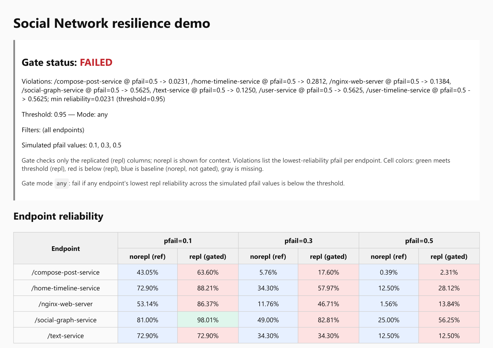

Nodes
Services, road segments, toll gates, sensors, proteins, metabolites, reactants.
Sheaft
Sheaft turns telemetry, topology and domain constraints into a live attributed graph, stress-tests disruption scenarios, and shows which critical operations are fragile before failures propagate.
Built for graph-structured systems: software infrastructure, smart mobility, and scientific reaction or interaction networks.
Sheaft represents a system as an attributed graph: nodes, edges, constraints, telemetry, stressors and critical operations. The domain changes; the resilience question stays the same: what breaks, how far it propagates, and which operations are affected.
Services, road segments, toll gates, sensors, proteins, metabolites, reactants.
Calls, flows, roads, reactions, interactions.
Latency, capacity, speed, confidence, energy, rate, state.
Domain contracts, signal rules, conservation laws, biological priors.
Crashes, demand surges, missing observations, perturbations.
Fragile paths, blast radius, affected operations, resilience posture.
Bering creates explicit graph artifacts. Sheaft evaluates disruption scenarios and produces resilience verdicts for critical operations.
Bering ingests telemetry, topology files, traces, event streams or explicit graph descriptions and builds a typed system model.
Critical operations, constraints and success predicates are attached to the graph: service journeys, corridor operations, reaction routes or biological pathways.
Sheaft simulates failures, missing observations, degraded components, demand spikes or perturbations without breaking the real system.
The result is a graph-level report: fragile components, affected operations, blast radius, posture trend and recommended validation targets.
Sheaft evaluates resilience of software systems before release and between releases. It builds service graphs from traces or topology artifacts, simulates dependency failures, and returns a gate or posture verdict for critical user journeys.
Sheaft evaluates resilience of smart mobility infrastructure represented as a live attributed graph: road segments, intersections, toll gates, sensors, signal controllers, payment systems and operations centers.
Smart mobility is cyber-physical infrastructure. Road networks, tolling, sensors and digital services form one distributed operational graph. NIST CPS contextSUMO road graph
Sheaft supports resilience analysis of scientific networks: chemical reaction networks, biological interaction networks, metabolic pathways and bioprocess graphs. It helps identify fragile routes, critical intermediates, missing observations and perturbation-sensitive modules.
Chemical and biological systems are routinely modeled as graphs: reaction networks connect reactants, intermediates and products through reactions; biological networks connect proteins, genes, metabolites and signaling interactions. EMBL-EBI biological networksRSC reaction networks
Bering builds typed graph artifacts from telemetry, topology inputs, traces, event streams or explicit domain models. It publishes stable model and snapshot artifacts for downstream resilience analysis.
Sheaft consumes graph artifacts, stress-tests disruption scenarios, evaluates domain policies and tracks resilience posture over time.
Model Discovery and Graph Simulation was recognized in ICSE 2026 NIER with a Distinguished Paper Award.
Official ICSE pageGraph-discovered resilience models were evaluated against live fault-injection outcomes on a distributed benchmark.
The model-discovery and simulation pipeline was tested on the OpenTelemetry Demo, including trace-derived dependencies and endpoint-level success predicates.
Bering and Sheaft are available as public tools for graph discovery, simulation, verdicts and posture monitoring.
View GitHub organizationSheaft can turn passive telemetry into an explicit model and produce useful resilience signals without running broad live experiments every time.
The current public report shows the most mature software-infrastructure workflow. The same report pattern extends to mobility and scientific-network pilots.

Corridor graph, missing observations, affected mobility journeys, disruption propagation.
Reaction/pathway graph, critical intermediates, perturbation-sensitive modules, alternative routes.
Bring traces/topology and incident history for one service domain. Sheaft builds a model, runs failure scenarios, and compares the result with known incidents or release risks.
Bring topology and telemetry for one corridor, tolling domain, parking/payment flow or sensorized mobility area. Sheaft identifies fragile components, missing observations and affected mobility journeys.
Bring a reaction network, biological interaction graph or pathway model with perturbation scenarios. Sheaft identifies critical intermediates, fragile modules and robustness hypotheses.
Sheaft is grounded in model discovery, graph simulation, sheaf-theoretic consistency, causal emergence and resilience monitoring. The product packages these ideas into practical workflows for networked systems.